Examples#
This gallery walks through every public feature of chemistrykit.kinetics:
closed-form integrated rate laws, the Arrhenius temperature dependence,
collision, diffusion, and transition-state theories of the rate constant,
Michaelis-Menten enzyme kinetics, a general stoichiometric reaction-network
engine with exact stochastic simulation, and chemical oscillators.
Each script in this gallery is self-contained and can be run directly with
python examples/kinetics/<section>/<script>.py. Every script also
carries an RST module docstring as its title/description and uses # %%
markers to split narrative text from code, which is exactly what
Sphinx-Gallery renders into the pages below – the script is the source of
truth for what you see, not a copy of it.
Sections#
rate_laws – the textbook zero/first/second-order integrated rate laws and their half-lives, reaction order from initial rates, and Wilhelmy’s first-order sucrose inversion.
arrhenius – the Arrhenius temperature dependence of a rate constant, and recovering the activation energy from synthetic rate-vs-temperature data via an Arrhenius plot.
rate_theory – rate constants from molecular properties: collision theory, Smoluchowski’s diffusion limit, and Eyring’s transition-state theory.
enzyme – Michaelis-Menten enzyme kinetics, the Lineweaver-Burk linearization, competitive/noncompetitive inhibition, and the full substrate-depletion progress curve.
networks – the general stoichiometric reaction-network engine: the steady-state approximation and Lindemann fall-off, chain-branching explosions, Bateman’s consecutive-reaction solution, Eigen’s relaxation kinetics, parallel reactions, and Gillespie’s stochastic simulation.
oscillators – the Brusselator limit cycle, Lotka’s neutral oscillations, and the Oregonator model of the Belousov-Zhabotinsky reaction.
Arrhenius equation#
Temperature dependence of a rate constant, and fitting an activation energy from rate-vs-temperature data via an Arrhenius plot.
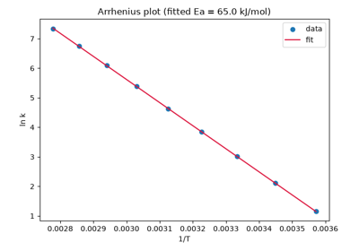
Recovering an activation energy from an Arrhenius plot
Enzyme kinetics#
Michaelis-Menten enzyme kinetics (saturation, substrate-depletion progress curves, and competitive/noncompetitive inhibition) and the Lineweaver-Burk double-reciprocal linearization.
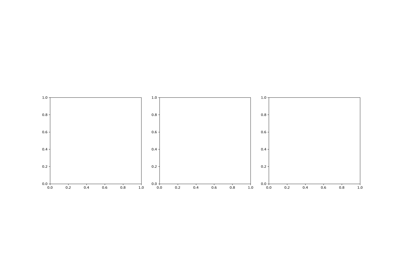
Michaelis and Menten’s saturating enzyme rate law
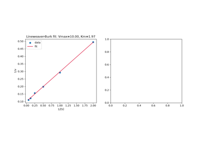
Lineweaver and Burk’s double-reciprocal plot
Reaction networks#
The general stoichiometric reaction-network engine: the steady-state approximation and Lindemann’s unimolecular fall-off, a chain-branching explosion mechanism, Bateman’s consecutive-reaction solution, Eigen’s relaxation kinetics, parallel reactions, and Gillespie’s exact stochastic simulation of the same networks.
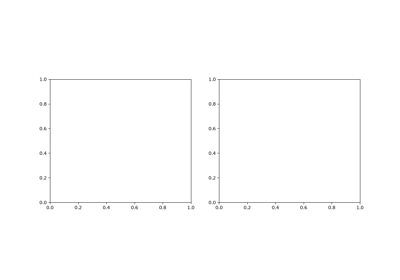
Bodenstein’s steady-state approximation and Lindemann’s unimolecular fall-off
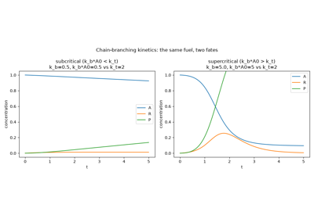
Chain-branching explosions and Semenov’s critical condition
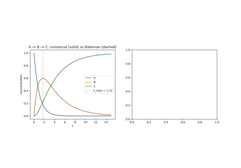
Bateman’s closed-form solution for consecutive reactions
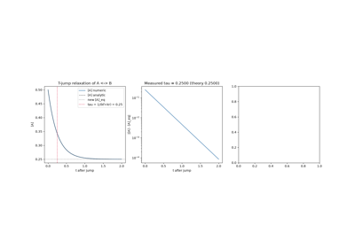
Eigen’s chemical relaxation: temperature jump and relaxation time
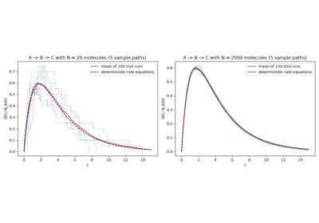
Gillespie’s stochastic simulation of reaction kinetics
Oscillating reactions#
Chemical mechanisms that oscillate instead of relaxing to equilibrium: the Brusselator limit cycle, Lotka’s autocatalytic scheme with its neutral orbits, and the Oregonator model of the Belousov-Zhabotinsky reaction.
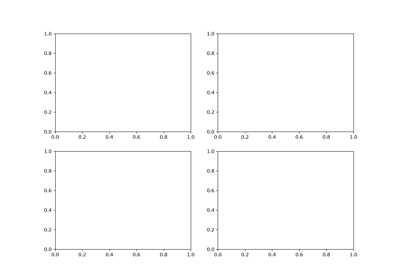
Prigogine and Lefever’s Brusselator limit cycle
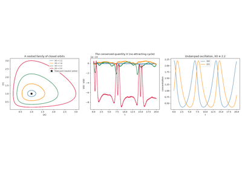
Lotka’s autocatalytic oscillator and its neutral orbits
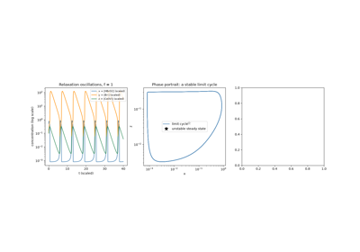
The Oregonator: oscillations of the Belousov-Zhabotinsky reaction
Rate laws#
Zero-, first-, and second-order integrated rate laws and half-lives, reaction order from initial rates, and Wilhelmy’s first-order sucrose inversion.
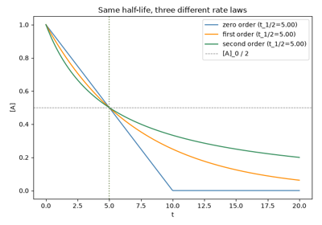
van’t Hoff’s reaction orders: zero-, first-, and second-order rate laws
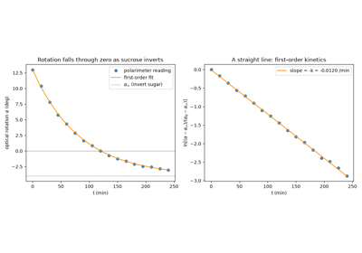
Wilhelmy’s sucrose inversion: the first measured first-order rate law
Rate theory#
Predicting a rate constant from molecular properties: hard-sphere collision theory, Smoluchowski’s diffusion-controlled encounter rate, and Eyring’s transition-state theory.
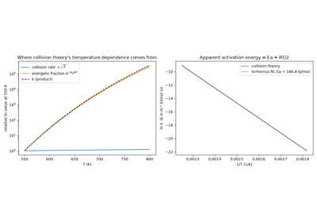
Trautz-Lewis collision theory: rate constants from molecular collisions
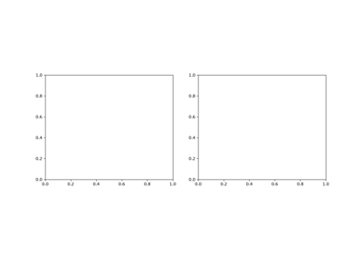
Smoluchowski’s diffusion-limited reaction rate
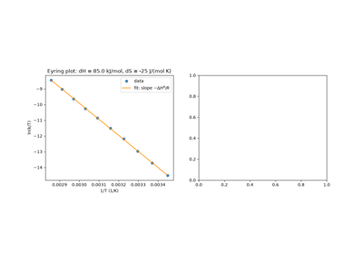
Eyring’s transition-state theory: activation enthalpy and entropy